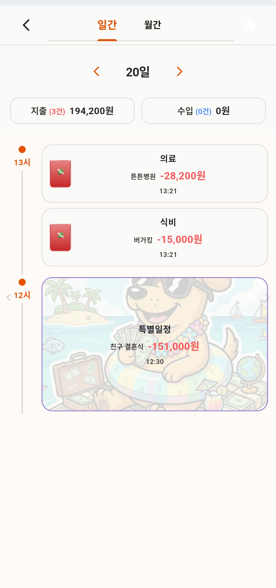
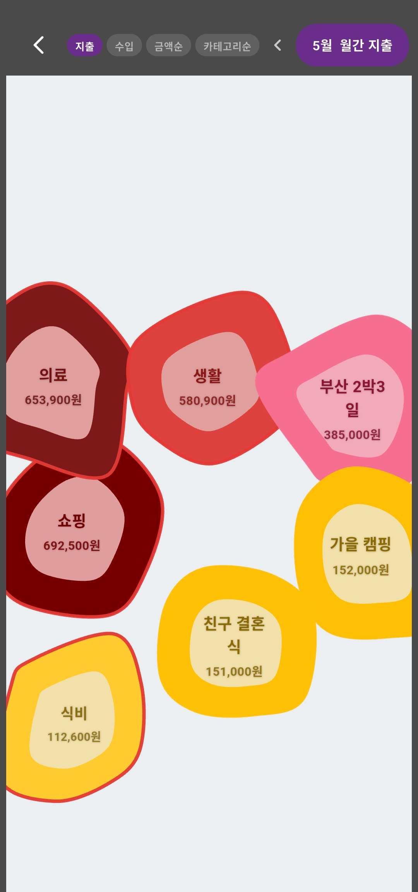
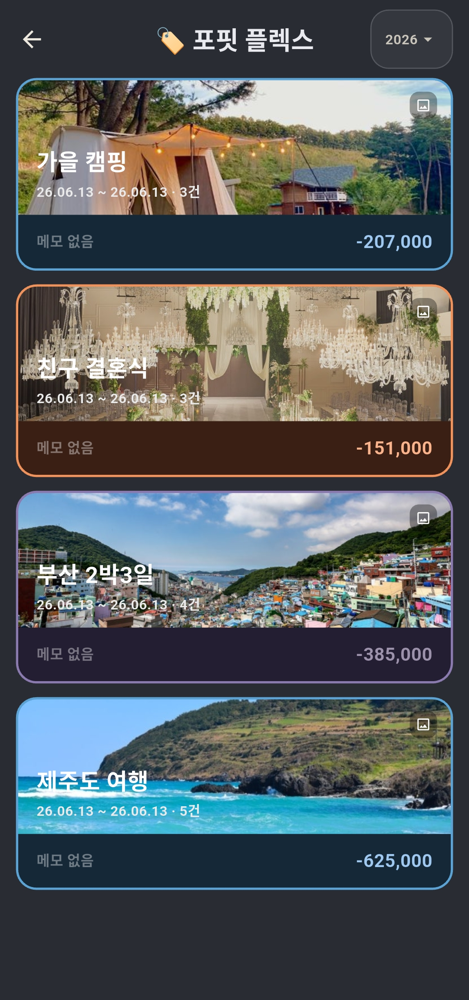
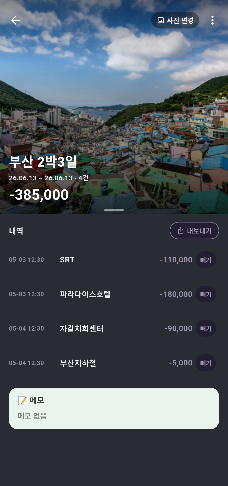

🧳 포핏 플렉스
여행·행사, 특별한 기간을 따로 모아봐요 🐾
여행·행사처럼 특별한 기간의 지출을 따로 묶어서 정산하고 모아보는 기능이에요. 그 기간에 들어온 기록이 자동으로 하나로 묶여, 나중에 "이번 여행에 얼마 썼지?"를 한눈에 볼 수 있어요.
시작은 홈 화면에서
홈을 옆으로 넘겨(2페이지) 특별일정 시작하기를 눌러요. 일정 이름을 적고 시작하면, 끝낼 때까지 들어오는 기록이 이 일정으로 자동으로 묶여요. (자세한 시작 방법은 홈화면 안내를 참고하세요.)


가계부 합산에서 뺄 수도 있어요. 시작할 때 스위치를 켜면, 이 일정 지출은 평소 가계부 합계·진단에서 빠져요(여행비를 일상 소비와 섞기 싫을 때).
끝나면 이렇게 정리돼요
일정을 종료하면 일반 모드로 돌아오고, 시작할 때 고른 합산 제외 여부에 따라 두 갈래로 정리돼요.
가계부에 포함한 일정
가계부 일지엔 "특별일정" 합계 한 줄(보라 테두리)로 뜨고, 월간 그림엔 일정마다 동그란 방울 하나(이름 = 일정명)로 떠요. 방울을 톡 누르면 "🧳 플렉스에서 보기"로 그 일정 상세까지 바로 갈 수 있어요.


가계부에서 뺀 일정
가계부 합계·진단에서 빠지고, 작은 표식만 남아요(톡 누르면 아래 모아보기로).
모아보기 — 여기 포핏 플렉스에서
지금 이 화면, 포핏플레이 → 🧳 포핏 플렉스에서 전체 일정 목록을 봐요. 일정을 누르면 기간·합계·항목 내역·메모가 담긴 상세로 들어가요.


일정 메모
일정 자체에도 메모를 남길 수 있어요(기록 화면이나 상세의 "+ 메모"). 항목별 메모와는 별개예요.
기록은 안전해요. 플렉스는 원본 기록은 그대로 두고 "이 일정 소속"이라는 표시만 붙이는 방식이에요. 그래서 일정에서 항목을 빼면 원래 가계부 자리로 그대로 돌아가요 — 기록이 바뀌거나 사라지지 않아요.